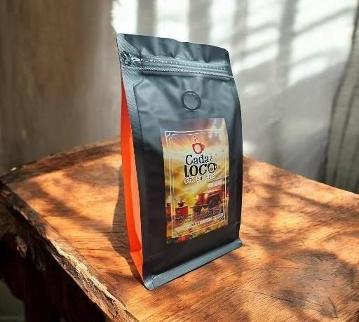

Estación básica
Café de origen, aromáticas, agua, galletas, montaje y personal.
Eventos
Experiencias de café que conectan, inspiran y acompañan tus momentos especiales. Diseñamos estaciones a la medida de tu evento.
Más de 5.000 personas atendidas. Entre esas mesas, el 2.º Día del Egresado de la Universidad de La Salle. En todas las estaciones hay vasos compostables y mezcladores de madera.
Café de origen, aromáticas, agua, galletas, montaje y personal.

Chemex y prensa en vivo, cata guiada y tarjetas de intención.

Novena con café, buñuelo o natilla, para el cierre de año.